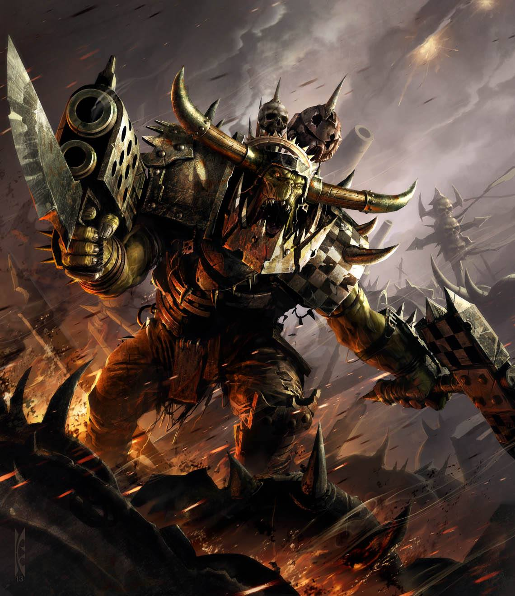
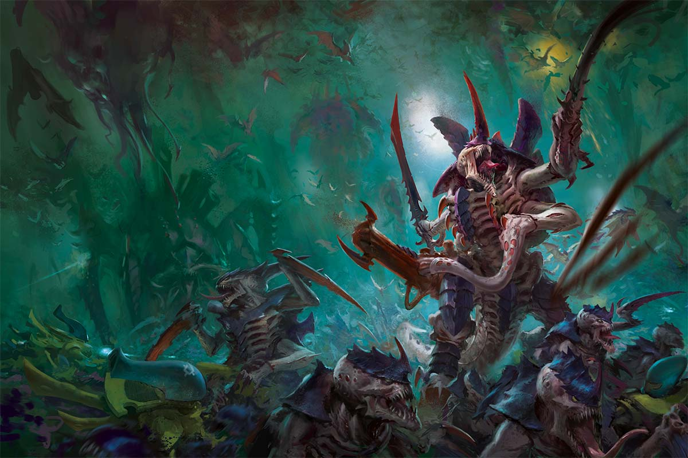

Jump to top
About the Xenos
Alien species that the Imperium considers abominations to be purged. Each pursues its own ancient agenda, and many predate humanity by millions of years.
Xenos Factions

An ancient race of skeletal androids who once ruled the galaxy as the Necrontyr. After trading their flesh for undying metal bodies, they slept for sixty million years in stasis-tombs. Now their dynasties are awakening to reclaim the stars.
Read more about Necrons

A brutal, green-skinned warrior race that lives for battle. Orks are the most widespread xenos species in the galaxy, and when gathered in vast numbers under a mighty warboss they form a WAAAGH! capable of overrunning entire sectors.
Read more about Orks

A young, technologically advanced and expansionist empire that believes in the 'Greater Good'. The T'au unite their own castes and many conquered or allied alien races under a single philosophy of cooperation and shared purpose.
Read more about T'au Empire

An extragalactic swarm of bio-engineered horrors that devours all biological matter in its path. Directed by a single gestalt consciousness called the Hive Mind, Tyranid Hive Fleets strip entire worlds to bare rock.
Read more about Tyranids